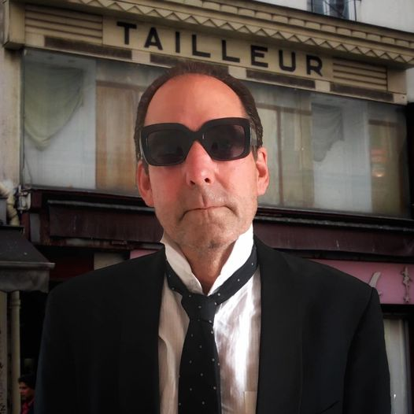

<div class="section" fxLayout fxLayoutAlign="center">
  <div class="main" fxLayout="column">
    <div class="name">
      victor de boo
    </div>
    <div class="image-container">
      
    </div>
    <!--  -->
    <div class="after-image">

      <div class="header">drummer & graphic artist </div>  
      <div
        class="content">
    
        Victor is a successful Dutch jazzdrummer and graphic artist. He performed and broadcasted live with legends like
        George Duke, Gregory Porter, Oleta Adams, Chris Potter, Todd Rundgren, dr Lonnie Smith............ among many
        others. When you see his work its clear he mainly gets his inspiration from his daily work as a musician. To get the
        two occupations a bit separated from each other he choose to work under the name BOO graphic art
      </div>
      <p class="link">
        For his work as a drummer check: <a href="https://www.victordeboo.nl" target="_blank">https://www.victordeboo.nl</a>
      </p>
    </div>

  </div>  


</div>